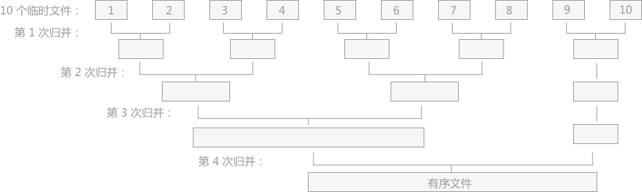
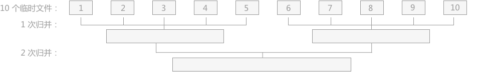
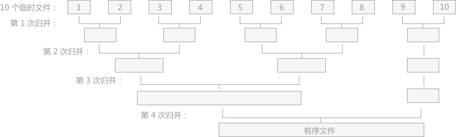
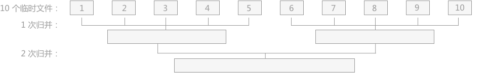

什么是外部排序算法
上一章介绍了很多排序算法，插入排序、选择排序、归并排序等等，这些算法都属于内部排序算法，即排序的整个过程只是在内存中完成。而当待排序的文件比内存的可使用容量还大时，文件无法一次性放到内存中进行排序，需要借助于外部存储器（例如硬盘、U盘、光盘），这时就需要用到本章介绍的外部排序算法来解决。
外部排序算法由两个阶段构成：
例如，有一个含有 10000 个记录的文件，但是内存的可使用容量仅为 1000 个记录，毫无疑问需要使用外部排序算法，具体分为两步：

如图 1 所示有 10 个初始归并段到一个有序文件，共进行了 4 次归并，每次都由 m 个归并段得到 ⌈m/2⌉ 个归并段，这种归并方式被称为 2-路平衡归并。

对比 图 1 和图 2可以看出，对于 k-路平衡归并中 k 值得选择，增加 k 可以减少归并的次数，从而减少外存读写的次数，最终达到提高算法效率的目的。除此之外，一般情况下对于具有 m 个初始归并段进行 k-路平衡归并时，归并的次数为：s=⌊logkm ⌋（其中 s 表示归并次数）。
从公式上可以判断出，想要达到减少归并次数从而提高算法效率的目的，可以从两个角度实现：
外部排序算法由两个阶段构成：
- 按照内存大小，将大文件分成若干长度为 l 的子文件（l 应小于内存的可使用容量），然后将各个子文件依次读入内存，使用适当的内部排序算法对其进行排序（排好序的子文件统称为“归并段”或者“顺段”），将排好序的归并段重新写入外存，为下一个子文件排序腾出内存空间；
- 对得到的顺段进行合并，直至得到整个有序的文件为止。
例如，有一个含有 10000 个记录的文件，但是内存的可使用容量仅为 1000 个记录，毫无疑问需要使用外部排序算法，具体分为两步：
- 将整个文件其等分为 10 个临时文件（每个文件中含有 1000 个记录），然后将这 10 个文件依次进入内存，采取适当的内存排序算法对其中的记录进行排序，将得到的有序文件（初始归并段）移至外存。
- 对得到的 10 个初始归并段进行如图 1 的两两归并，直至得到一个完整的有序文件。
注意：此例中采用了将文件进行等分的操作，还有不等分的算法，后面章节会介绍。

图 1 2-路平衡归并
如图 1 所示有 10 个初始归并段到一个有序文件，共进行了 4 次归并，每次都由 m 个归并段得到 ⌈m/2⌉ 个归并段，这种归并方式被称为 2-路平衡归并。
对于外部排序算法来说，影响整体排序效率的因素主要取决于读写外存的次数，即访问外存的次数越多，算法花费的时间就越多，效率就越低。注意：在实际归并的过程中，由于内存容量的限制不能满足同时将 2 个归并段全部完整的读入内存进行归并，只能不断地取 2 个归并段中的每一小部分进行归并，通过不断地读数据和向外存写数据，直至 2 个归并段完成归并变为 1 个大的有序文件。
计算机中处理数据的为中央处理器（CPU），如若需要访问外存中的数据，只能通过将数据从外存导入内存，然后从内存中获取。同时由于内存读写速度快，外存读写速度慢的差异，更加影响了外部排序的效率。
对于同一个文件来说，对其进行外部排序时访问外存的次数同归并的次数成正比，即归并操作的次数越多，访问外存的次数就越多。图 1 中使用的是 2-路平衡归并的方式，举一反三，还可以使用 3-路归并、4-路归并甚至是 10-路归并的方式，图 2 为 5-路归并的方式：
图 2 5-路平衡归并
对比 图 1 和图 2可以看出，对于 k-路平衡归并中 k 值得选择，增加 k 可以减少归并的次数，从而减少外存读写的次数，最终达到提高算法效率的目的。除此之外，一般情况下对于具有 m 个初始归并段进行 k-路平衡归并时，归并的次数为：s=⌊logkm ⌋（其中 s 表示归并次数）。
从公式上可以判断出，想要达到减少归并次数从而提高算法效率的目的，可以从两个角度实现：
- 增加 k-路平衡归并中的 k 值；
- 尽量减少初始归并段的数量 m，即增加每个归并段的容量；
其增加 k 值的想法引申出了一种外部排序算法：多路平衡归并算法；增加数量 m 的想法引申出了另一种外部排序算法：置换-选择排序算法。两种外部排序算法会在后序章节中详细介绍。
关注公众号「站长严长生」，在手机上阅读所有教程，随时随地都能学习。内含一款搜索神器，免费下载全网书籍和视频。

微信扫码关注公众号